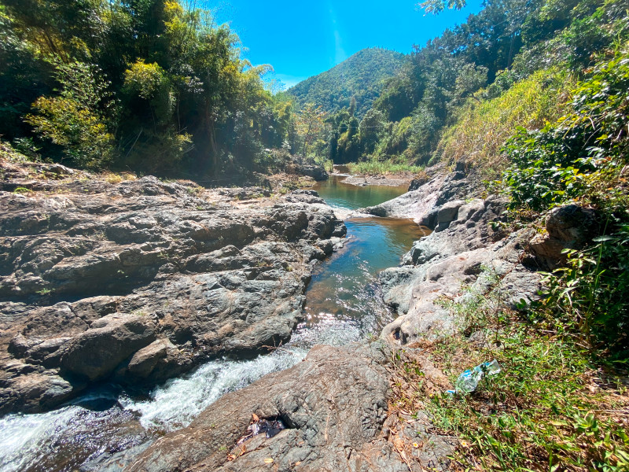
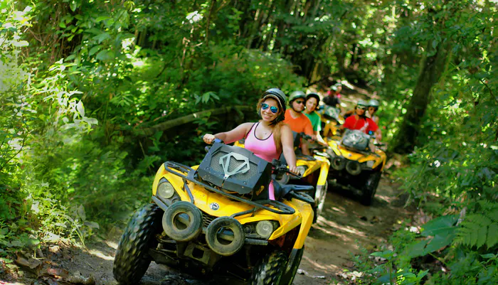
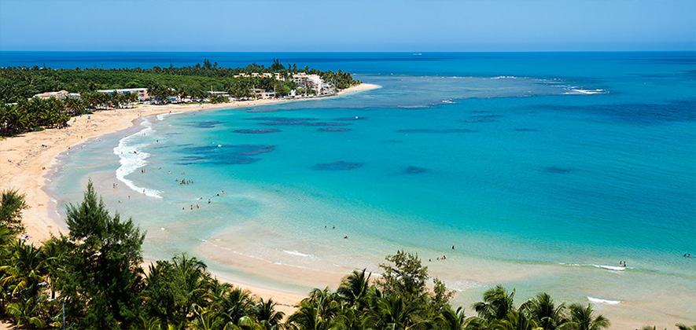

Las Pailas
Al ser una selva tropical, hay muchos ríos que bajan del Yunque. Durante muchos años, las aguas torrenciales han convertido algunas de estas rocas de río en patios de recreo naturales, con piscinas y toboganes de agua. Hay un lugar en Luquillo llamado Las Paylas (o Las Pailas) donde las rocas de este río son muy suaves y hacen que los toboganes sean muy divertidos.
- Dirección: 87Q9+5JV, PR-983, Luquillo, 00773
Carabalí Rainforest Park
Ubicado entre las exuberantes colinas de la selva tropical nacional El Yunque y las aguas cristalinas del océano Atlántico, Carabalí Rainforest Adventure Park es una hacienda llena de acción y un destino de aventura favorito en Puerto Rico.
Pueden visitar en:
- Dirección: Puerto Rico 992, Luquillo, 00773
Balneario La Monserrate Luquillo Beach

Balneario La Monserrate está ubicado en la región este de Puerto Rico, específicamente en el pueblo de Luquillo. La playa es administrada por el Departamento de Recursos Naturales de Puerto Rico, lo que significa que la playa tiene algunas "ventajas" adicionales que la distinguen de la mayoría de las playas de Puerto Rico. Las instalaciones cuentan con baños, regaderas, áreas verdes, merenderos, entre otros.
Pueden visitar en:
- Dirección: 97MC+437, PR-3, Luquillo, 00773
Playa Costa Azúl
La playa Costa Azul está ubicada al este de otra playa popular en Luquillo, Balneario Monserrate. Su larga extensión de arena y sus palmeras perfectas hacen de esta playa un gran lugar para tomar fotografías.
Pueden visitar en:
- Dirección: 97JM+4FC, Luquillo, 00773